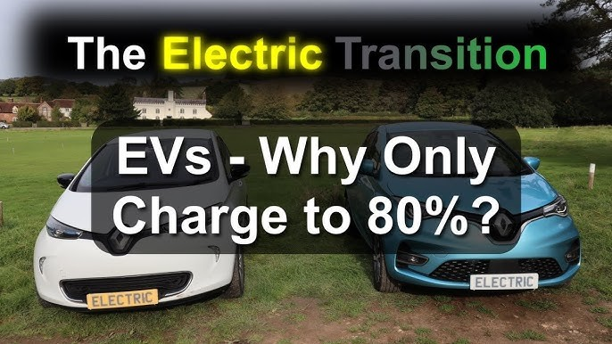

Many electric vehicle owners have likely noticed a curious phenomenon: while fast charging can deliver impressive speeds initially, the charging rate significantly slows down as the battery approaches 80% capacity. This isn't a technological limitation, but rather a deliberate design choice aimed at maximizing battery life and safety.
Safety First: Mitigating the Risks of High-Speed Charging
Fast charging involves delivering a substantial amount of electrical energy to the battery pack in a short period. To achieve this, high-power charging systems typically utilize high current levels. While this accelerates the charging process, it also increases the battery's risk of overheating.
Imagine the battery pack as a collection of numerous individual cells. Rapidly charging these cells is akin to filling a large number of buckets with water at an extremely high flow rate. As the buckets are nearly full, controlling the water flow becomes increasingly challenging, and the risk of overflow increases significantly. Similarly, with the battery, high current levels near full charge can lead to:
- Overheating: Excessive heat generation can damage battery cells, potentially leading to thermal runaway, a dangerous condition where heat can spread uncontrollably within the battery pack.
- Circuit Overload: High currents can stress electrical components within the vehicle, potentially causing damage to the charging system or even triggering safety mechanisms like fuses.
- Increased Contact Resistance: High currents can increase the resistance at the points where the charger connects to the vehicle, generating heat and potentially damaging the connectors.

To mitigate these risks, the vehicle's Battery Management System (BMS) intervenes when the battery reaches around 80% charge. It transitions from a high-current "constant current" phase to a "constant voltage" phase, significantly reducing the charging current. This slows down the charging process considerably, but it prioritizes safety and minimizes the risk of battery damage.
Protecting Battery Longevity: The Importance of Gradual Charging
Beyond safety concerns, charging to 100% frequently can have a detrimental impact on the long-term health of the battery.
- Lithium Ion Dynamics: Lithium-ion batteries rely on the movement of lithium ions within the battery cells during charging and discharging. Rapid charging can disrupt this process, leading to uneven distribution of lithium ions within the cell. This uneven distribution can lead to the formation of lithium dendrites, microscopic needle-like structures that can cause internal short circuits and permanently reduce battery capacity.
- Heat Stress: As mentioned earlier, rapid charging generates heat. Prolonged exposure to elevated temperatures can accelerate the aging process of the battery cells, further reducing their lifespan.
By limiting the charging to 80% most of the time, drivers can significantly extend the lifespan of their electric vehicle's battery and maintain optimal performance over the long term.
In Conclusion
While the desire to fully charge an electric vehicle quickly is understandable, the 80% charge limit is a crucial safety and longevity measure. By carefully managing the charging process and prioritizing battery health, manufacturers ensure that electric vehicles remain safe and reliable, and perform optimally over their entire service life.